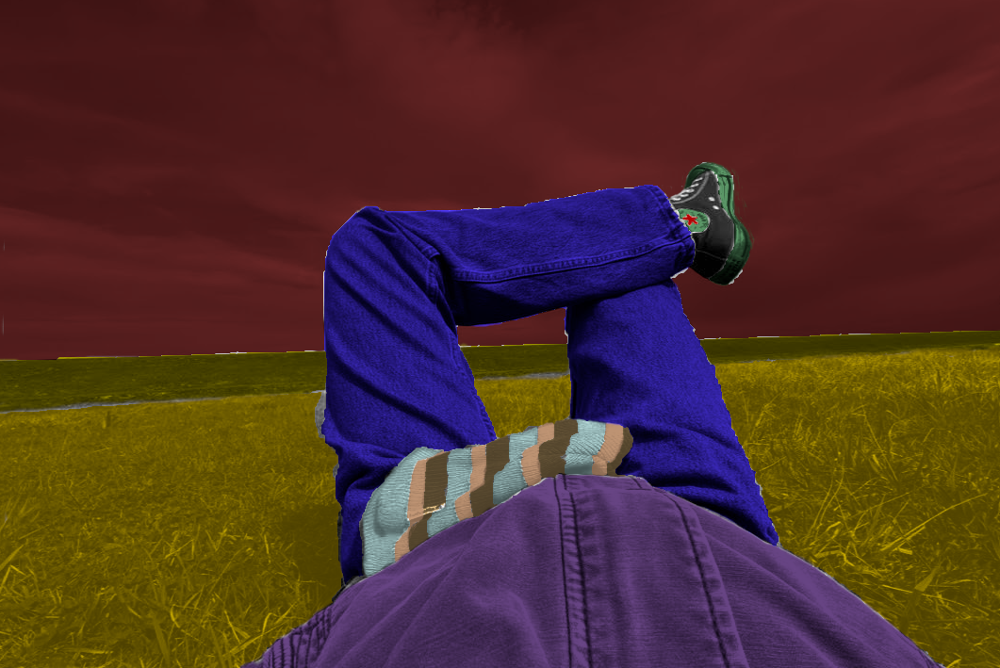
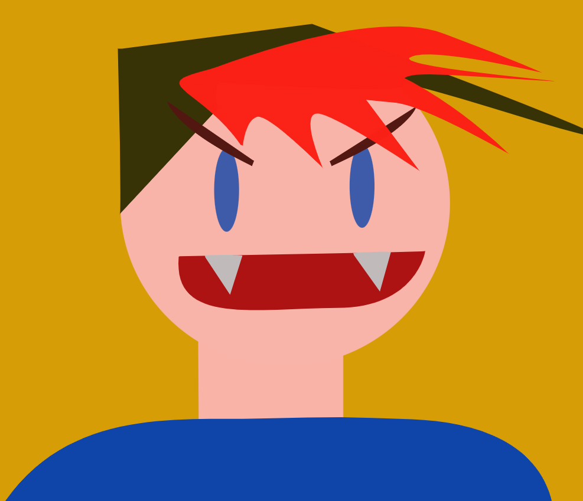
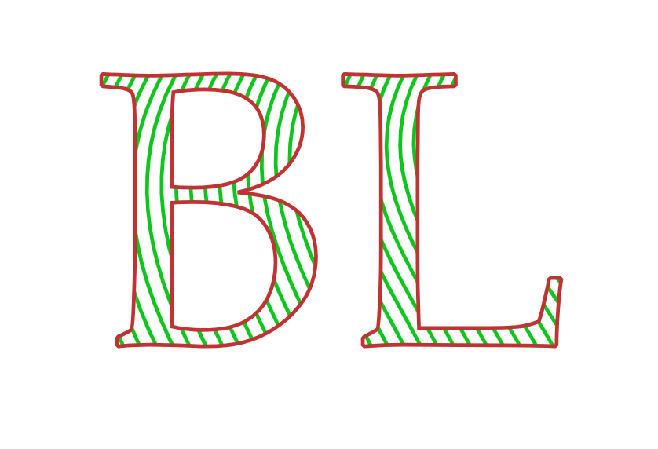
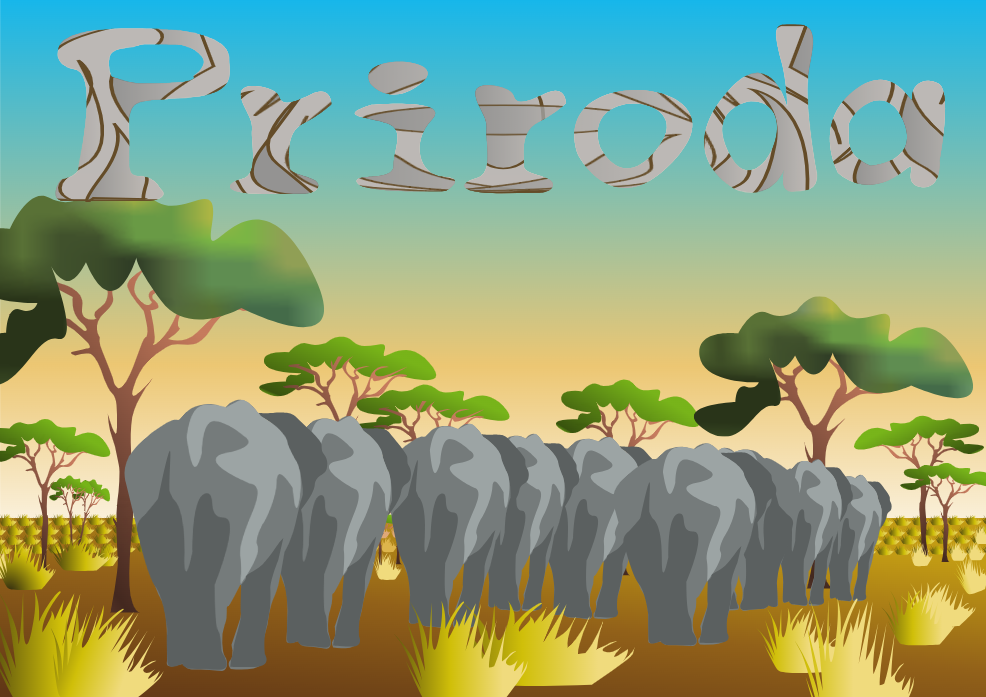
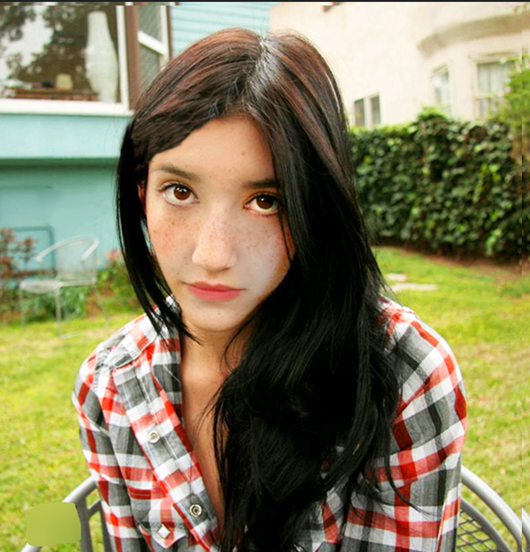
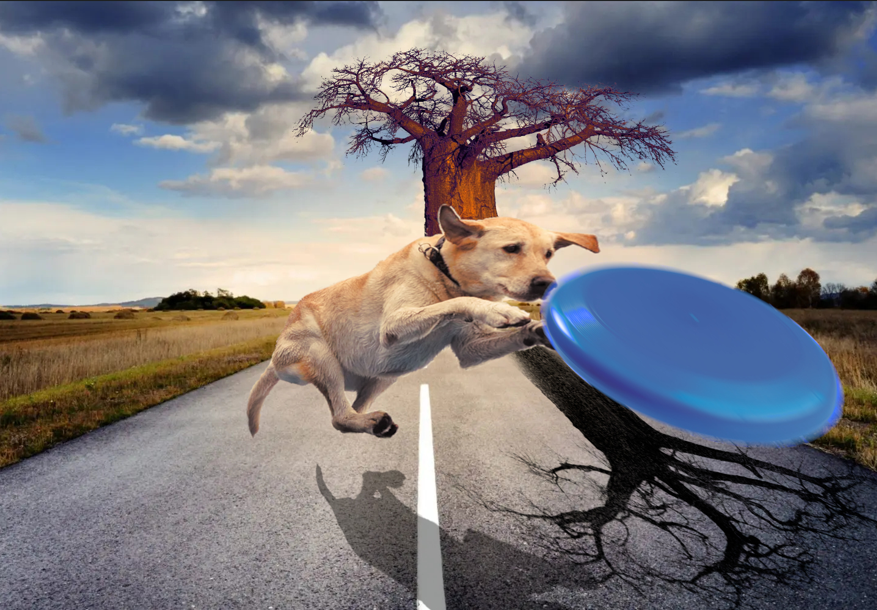
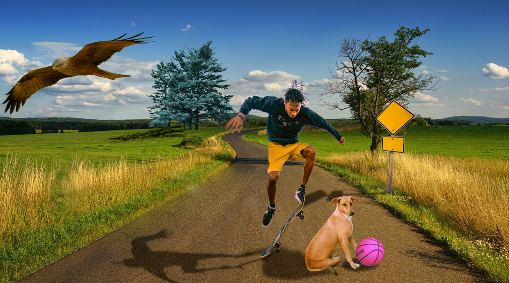
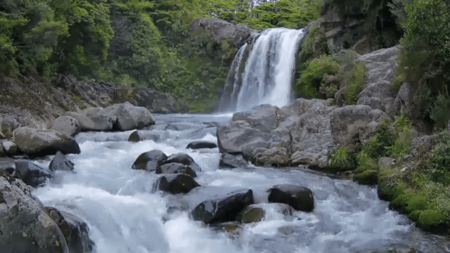

Vježba 1 - Koloriranje
Ova vježba se odnosila na osnovnu vještinu izrađivanja maski za koloriranje u piksel grafici. Ja sam ju izradila u GIMP-u, a izvorna slika je slika mene kako ležim u travi.
Vježba 2 – Bezierove krivulje
Cilj ove vježbe je bio naučiti manevrirati Bezierovim krivuljama u programu za vektorsku grafiku. Ja sam odabrala Inkscape i nacrtala sam ovo kao svoj dio zadatka.
Vježba 3 – Interpolacija
Alatom za tekst smo napisali svoje inicijale, pretvorili ih iz Texta u Path i popunili ih krivuljama koje smo umnožili interpolacijom. Sjećam se da mi je ova vježba bila jako zahtjevna.
Vježba 4 – Upoznavanje s layerima i oblicima
Učili smo stvarati oblike, kombinirati ih i uređivati, i onda organizirati elemente crteža po slojevima, kako bi se dobio dojam trodimenzionalnosti.Ja sam odlučila prikazati oblake ispred Sunca - dodala sam objektima Shading kako bi izgledalo smislenije, da se lakše uoči raspored elemenata mog crteža. Gledajući unatrag, možda je malo prejednostavno odrađeno.
Vježba 5 - Prvi projekt
Ovo je moj prvi projekt. Zadatak je bio precrtati pozadinsku sliku u programu za vektorsku grafiku. Slika koju sam trebala precrtati je bila slika krda slonova u savani, i radila sam ju u Inskcapeu. Jako mi se sviđa moj rad.
Vježba 6 - Photoshop
Ova vježba se odnosila na osnovnu vještinu sakrivanja i ispravljanja nepravilnosti na slici, u ovom slučaju morali smo maknuti par "ogrebotina" sa pozadine i koristiti alate poput Clone stamp i Burn/Dodge toola da napravimo izmjene na djevojci na fotografiji.
Vježba 7 - Fotomontaža
U ovoj vježbi smo radili u programu za piksel grafiku i zadatak je bio montirati elemente različitih slika u jednu pomoću alata poput Scissors toola, maski za koloriranje, podešavanja osvjetljenja, itd. Mislim da je moj rad jako kreativan i zabavan.
Vježba 8 - Fotomontaža - projekt
U ovom projektu smo trebali objediniti sve što smo naučili iz vježbi o fotomontaži, ali uz baratanje s više elemenata. Sve je trebalo pregledno rasporediti po slojevima.
Vježba 9 - Kinemagraf
U ovoj vježbi smo se počeli baviti multimedijom i video obradom. Zadatak je bio napraviti kinemagraf - zamrznuti jedan frame odabranog videa, dodati mu masku preko dijela koji se ne bi trebao micati, i onda tu sliku staviti u sloj iznad videa. Rezultat je video u kojem se miče samo pojedini dio koji smo mi odredili.
Vježba 10 i 11 - HTML kod
Zadnje dvije vježbe bavile su se pisanjem html kodova sa elementarnim naredbama za naše osobne web stranice, koje bi zatim uredili pomoću style.css datoteka koje smo napravili. Trebalo je obratiti pažnju na strukturu elemenata u lokalnoj mapi. Zatim je sve to trebalo prenijeti na GitHub. Dolje je link za moje stranice:
DM stranica